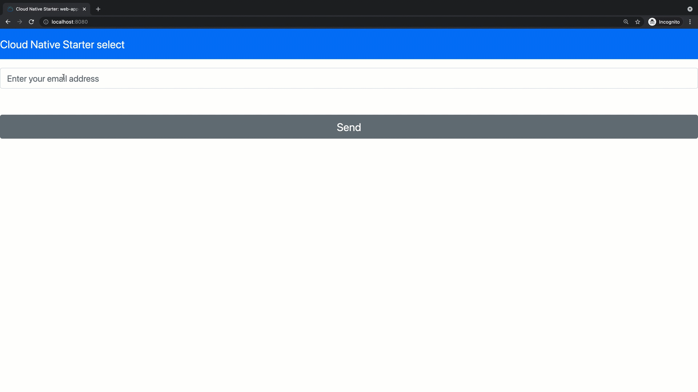
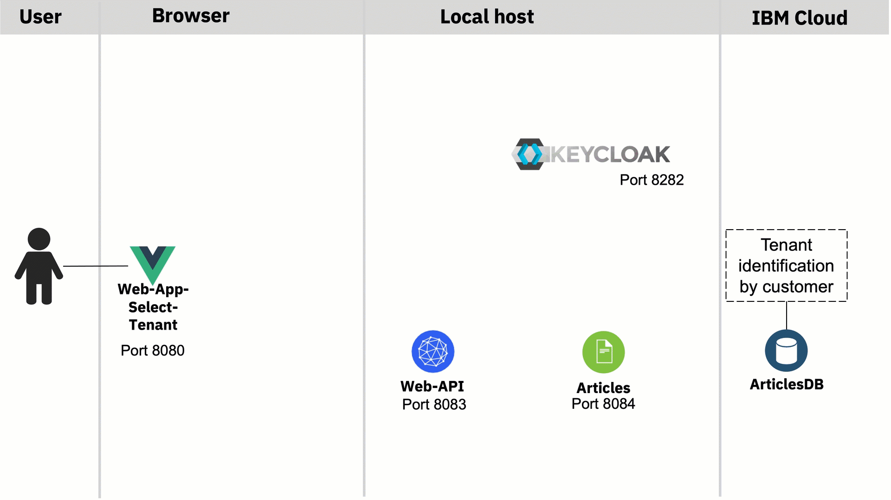
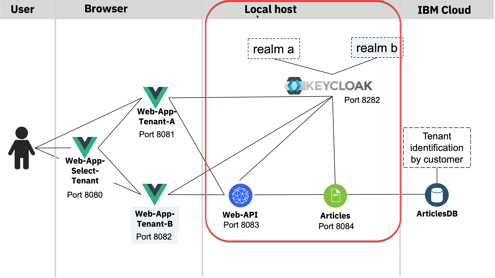

Extract tenant and reconfigure OIDC configuration with Quarkus for Keycloak¶
This implementation detail is structured in objective, use case definition, architecture, multi tenancy realization, technologies, and implementation.¶
Objective¶¶
I want to start with a very simple microservices based application example for multi tenancy implementation, and for this application is a simple use case defined.
The starting point, from the technical and usage perspective, is this workshop Get started to deploy a Java Microservices application to Code Engine.
Use Case definition¶
Show articles based on an email domain, validated by role and user authentication and authorization.
Basic Flow¶
- Insert email address
- Based on the domain of your email address you are routed to the right tenant (example
blog.deandblog.com) - Login to the right realm on the Identity and Access Management system
- The articles are displayed according to the user role and tenant.
The following gif shows an example implementation overview of this use case on the local machine.

Architecture¶

The gif shows a simplified overview of the dependencies of the architecture in following sequence:
- Invoke
web-app-selectonport 8080and insert your email to select the domain for the tenant ((blog.de == tenantA) and (blog.com == tenantA)) - The related webfrontend for
blog.deis invoked, it'sweb-app-tenant-a(port 8081) that redirects to the right Keycloak realm (tenant-A) which provides the login and returns the access-token. We use that token to access theweb-apimicroservice (port 8083). Therefor we invoke theweb-apiREST endpoint related to the right tenant (realm), in this case it's tenant-a. (user:alice;role:userin both realms) - The microservice
web-apiuses the the functionalities for multitenancy provided by Quarkussecurity openID connect multitenancyto extract the invoked endpoint from therootcontextand set the right configuration for the given tenant, that means in this case for theKeycloak realm. Quarkus also does the validation of the access token at right Keycloak realm and forwards the given access-token to the microservice articles, by using the right REST endpoint for the given tenant. - The
articlesmicroservice does the same validation asweb-apiusing Quarkus and uses the right query to provide the needed articles data from the Cloudant database.
Multi tenancy realization¶
In the given use case following multi tenancy realization will be used.
- Variable frontends for each domain
- Microservice using Quarkus Security OpenID Connect Multi Tenancy
- Database will have an additional entry to separate the domains
- Identity and access management will be managed by different Keycloak realms
Technologies¶
The example application currently uses following technologies.
- Identity and Access Management (Keycloak)
- Multi Tenancy (Quarkus Security OpenID Connect Multi Tenancy)
- Microservices (Quarkus)
- Web frontend Vue.js (Web frontend with JavaScript)
- (Optional a Database) Cloudant
Implementation¶
The Quarkus Security OpenID Connect Multi Tenancy for the multi tenancy of the java microservices is used for the implementation. Here we focus only on the example implementation for the web-api microservice.
These are the steps:
- Provide a REST endpoint for each tenant
- Extract the invoked endpoint from the
rootcontextand set the right configuration in theCustomTenantConfigResolverclass for the given tenant, that means in this case for theKeycloak realm. - Based on the known tenant invoke the right endpoint of the
articles service.- Create REST client for each tenant
- Invoke the right client

Provide REST endpoint for each tenant¶
Relevant code in ArticleResource.java of the web-api service.
In this case these are the two endpoints:
@Path("/articlesA")@Path("/articlesB")
@GET
@Path("/articlesA")
@Produces(MediaType.APPLICATION_JSON)
//@Authenticated
@RolesAllowed("user")
@NoCache
public List<Article> getArticlesA() {
try {
List<CoreArticle> coreArticles = articlesDataAccess.getArticles(5);
System.out.println("-->log: com.ibm.webapi.ArticleResource.getArticles -> articlesDataAccess.getArticles");
return createArticleList(coreArticles);
} catch (NoConnectivity e) {
System.err.println("-->log: com.ibm.webapi.ArticleResource.getArticles: Cannot connect to articles service");
throw new NoDataAccess(e);
}
}
@GET
@Path("/articlesB")
@Produces(MediaType.APPLICATION_JSON)
//@Authenticated
@RolesAllowed("user")
@NoCache
public List<Article> getArticlesB() {
try {
List<CoreArticle> coreArticles = articlesDataAccess.getArticles(5);
System.out.println("-->log: com.ibm.webapi.ArticleResource.getArticles -> articlesDataAccess.getArticles");
return createArticleList(coreArticles);
} catch (NoConnectivity e) {
System.err.println("-->log: com.ibm.webapi.ArticleResource.getArticles: Cannot connect to articles service");
throw new NoDataAccess(e);
}
}
Extract the invoked endpoint and set the right configuration in the CustomTenantConfigResolver¶¶
Extract the invoked endpoint from the rootcontext and set the right configuration in the CustomTenantConfigResolver class for the given tenant, that means in this case for the Keycloak realm.
Relevant code in CustomTenantConfigResolver.java of the web-api microservice.
package com.ibm.webapi;
import javax.enterprise.context.ApplicationScoped;
// Tenant
import io.quarkus.oidc.TenantConfigResolver;
import io.quarkus.oidc.OidcTenantConfig;
import io.vertx.ext.web.RoutingContext;
@ApplicationScoped
public class CustomTenantConfigResolver implements TenantConfigResolver {
@Override
public OidcTenantConfig resolve(RoutingContext context) {
System.out.println("-->log: com.ibm.web-api.CustomTenantResolver.resolve : " +
// 1. Extract path
context.request().path());
String path = context.request().path();
String[] parts = path.split("/");
if (parts.length == 0) {
// resolve to default tenant configuration
return null;
}
// 2. Verify path with given tenant options
if ("articlesA".equals(parts[1])) {
OidcTenantConfig config = new OidcTenantConfig();
System.out.println("-->log: com.ibm.web-api.CustomTenantResolver.resolve A: " + config.getToken().getIssuer().toString());
// 3. Set the right configuration for the Keycloak realm
config.setTenantId("tenantA");
config.setAuthServerUrl("http://localhost:8282/auth/realms/tenantA");
config.setClientId("backend-service");
OidcTenantConfig.Credentials credentials = new OidcTenantConfig.Credentials();
credentials.setSecret("secret");
config.setCredentials(credentials);
System.out.println("-->log: com.ibm.web-api.CustomTenantResolver.resolve A: " + config.toString());
return config;
}
if ("articlesB".equals(parts[1])) {
System.out.println("-->log: com.ibm.web-api.CustomTenantResolver.resolve");
OidcTenantConfig config = new OidcTenantConfig();
System.out.println("-->log: com.ibm.web-api.CustomTenantResolver.resolve issuer: " + config.getToken().getIssuer().toString());
config.setTenantId("tenantB");
config.setAuthServerUrl("http://localhost:8282/auth/realms/tenantB");
config.setClientId("backend-service");
OidcTenantConfig.Credentials credentials = new OidcTenantConfig.Credentials();
credentials.setSecret("secret");
config.setCredentials(credentials);
System.out.println("-->log: com.ibm.web-api.CustomTenantResolver.resolve B: " + config.toString());
return config;
}
return null;
}
}
Based on the known tenant invoke the right endpoint of the articles service¶
Now we can invoke articles microservice, which is implemented in the same way.
1. Create REST client for each tenant¶
Relevant code in ArticlesDataAccess.java of the web-api service.
URI apiV1 = null;
apiV1 = UriBuilder.fromUri(articles_url_tenant_A).build();
System.out.println("-->log: com.ibm.web-api.ArticlesDataAccess.initialize URI (tenantA) : " + apiV1.toString());
articlesServiceA = RestClientBuilder.newBuilder()
.baseUri(apiV1)
.register(ExceptionMapperArticles.class)
.build(ArticlesService.class);
apiV1 = UriBuilder.fromUri(articles_url_tenant_B).build();
System.out.println("-->log: com.ibm.web-api.ArticlesDataAccess.initialize URI (tenantB) : " + apiV1.toString());
articlesServiceB = RestClientBuilder.newBuilder()
.baseUri(apiV1)
.register(ExceptionMapperArticles.class)
.build(ArticlesService.class);
Invoke the right client¶
Relevant code in ArticlesDataAccess.java of the web-api service.
String tenant = tenantJSONWebToken();
System.out.println("-->log: com.ibm.web-api.ArticlesDataAccess.getArticles (tenant): " + tenant );
if ("tenantA".equals(tenant)){
System.out.println("-->log: com.ibm.web-api.ArticlesDataAccess.getArticles " + tenant);
return articlesServiceA.getArticlesFromService(amount);
}
if ("tenantB".equals(tenant)){
System.out.println("-->log: com.ibm.web-api.ArticlesDataAccess.getArticles " + tenant);
return articlesServiceB.getArticlesFromService(amount);
} else {
System.out.println("-->log: com.ibm.web-api.ArticlesDataAccess.getArticles(NO TENANT)");
return null;
}